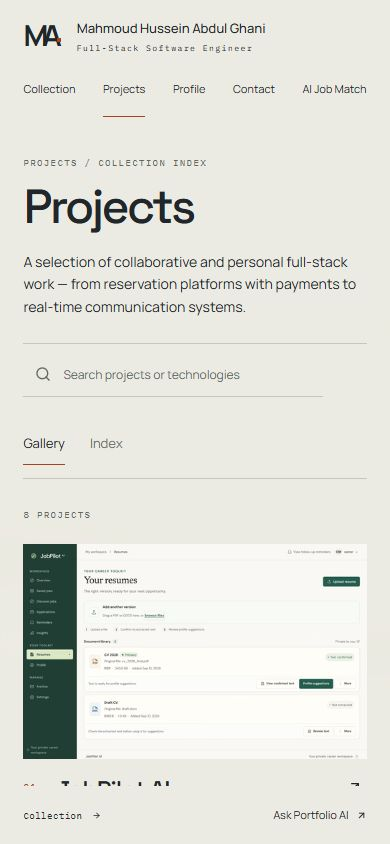
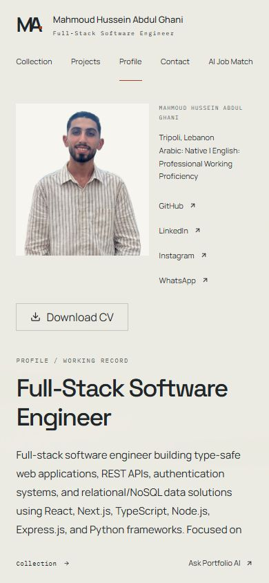
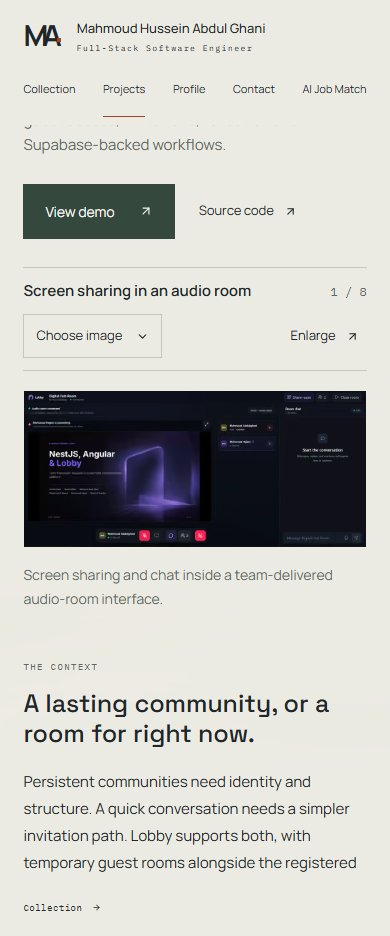
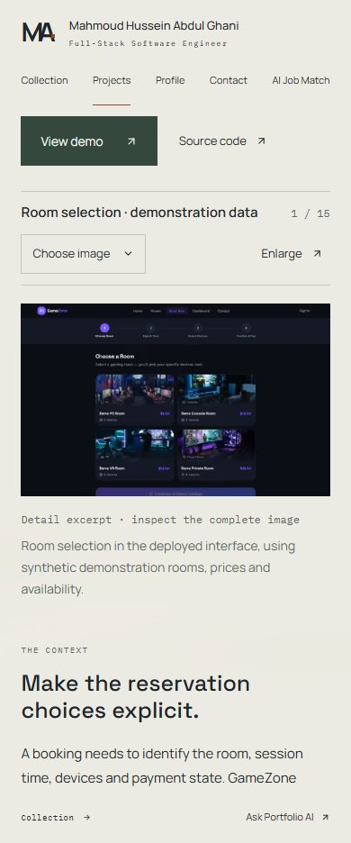
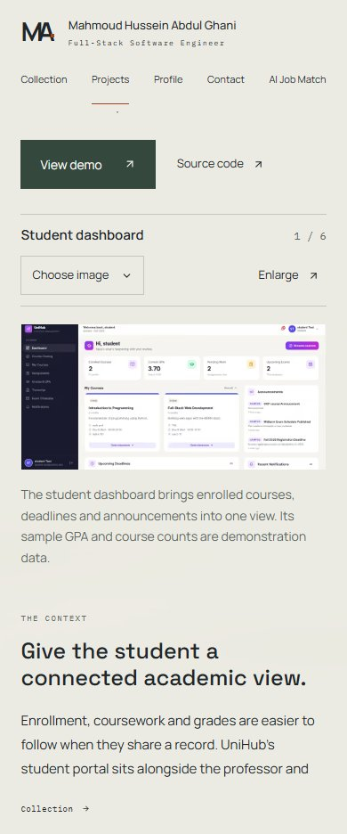
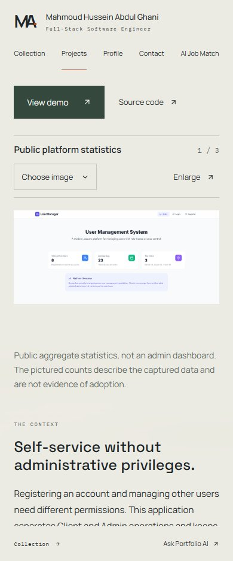
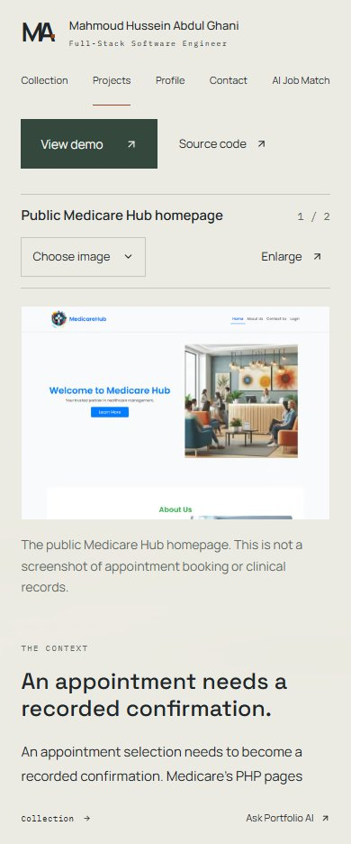
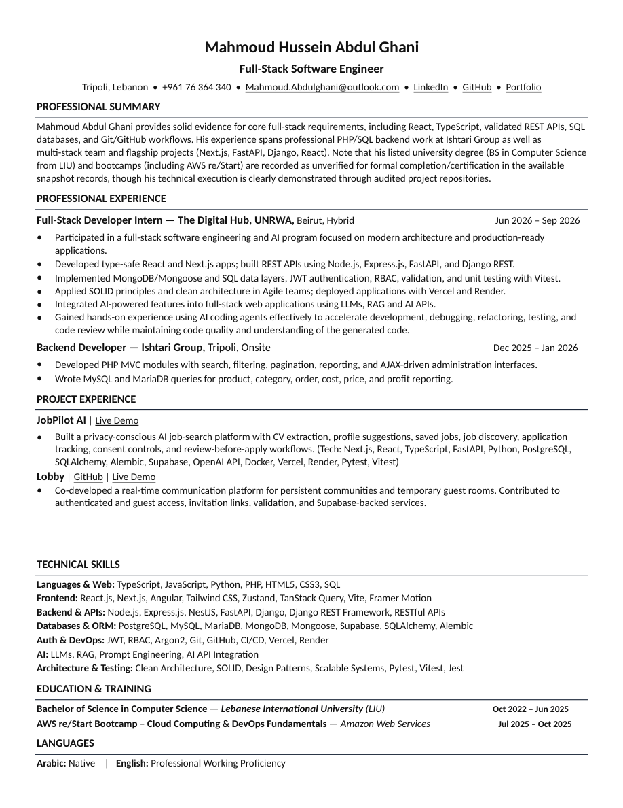

Blocked for production closeout by named deployed defects: tailored-CV overlap, accessibility/focus/link defects and unsupported negative qualification inference. Repairs pass within the verified local branch coverage; final CI and unavailable device gates are separate. No manual deployment or merge.
Current production and repaired local build are separate. Physical Safari, Android keyboard/portrait resolution and a spoken screen-reader walkthrough remain open. Device checklist. Immutable final-head CI and the final delivery decision are in the draft PR closeout.
| Check | Status | Environment / evidence |
|---|---|---|
| Production revision | passed | GitHub successful Vercel Production deployment for de9f665; alias asset fingerprint corroborates the approved build · Evidence |
| Public routes and eight readers | passed | Actual production: 26 route/width scans; live list/profile/site GETs, detail counters intercepted · Evidence |
| Current public layouts and axe scan | passed | Local compiled build: Chromium, Firefox and WebKit; 234 route/size scans, zero detected violations/errors · Evidence |
| All selectable project images | passed | Actual assets: 50 images × four widths = 200 decoded/framed observations; not synthetic pixels · Evidence |
| Inspector/media/disclosures | passed | Local actual-media: all eight readers × desktop/390px × three engines = 48 reader walkthroughs · Evidence |
| Production inspector focus wrap | failed | Actual production native Tab reaches the body while dialog remains open; corrected local wrap passes · Evidence |
| Async link names / streaming announcements / skip link | passed | Corrected local DOM and fixture regressions across Chromium, Firefox and WebKit; spoken reader behavior not verified · Evidence |
| Production transient Contact link name | failed | Actual production capture found an empty mailto link while profile was pending; corrected branch guards it · Evidence |
| Collection motion and bounded cleanup | passed | Local actual Intel UHD/ANGLE D3D11: all three × four widths, 12 recordings and isolated timings; zero idle draws · Evidence |
| Reduced motion / unsupported WebGL | passed | Native preference and controlled fallback separately; fallback is simulated, not phone-GPU proof · Evidence |
| Visibility gate and stalled-request deadline | passed | Real assets wait 16s offscreen then load; fixture regressions retain exact 14,999/15,000ms and original retry · Evidence |
| Resize, landscape and focused fields | passed | Local three-engine reduced viewport/resize observations; actual keyboard/chrome behavior remains open · Evidence |
| 200% and 400% browser zoom | passed | Genuine isolated Chromium tab zoom via tabs.setZoom/getZoom; 26 routes at 640/320 CSS px · Evidence |
| Initial performance and image/JS transfer | passed | Separate local/production lab runs: three HTTP-cold/warm pairs per route; no production throttling · Evidence |
| AWS/Digital Hub uncertainty and team attribution | passed | Actual production genuine AWS/Digital Hub/Lobby samples retain status and team boundaries; finite sample only · Evidence |
| AI initial Cedar response | failed | Actual production SSE interrupted; one bounded fresh attempt recovered successfully, failure retained · Evidence |
| Job Match negative qualification inference | failed | Actual production report asserted no formal AWS certification was earned; shared policy repaired locally · Evidence |
| Corrected qualification policy | passed | Outgoing JSON/SSE context regressions + one genuine local answer preserves unknown versus unearned · Evidence |
| Current local provider availability | failed | Two of three bounded local provider calls returned upstream 503/API 502; not mocked, no overload/retry loop · Evidence |
| Standard CV download/font/content | passed | Actual production download: one Letter page, Carlito, 10 links, neutral training and co-developed attribution · Evidence |
| Production tailored CV readability | failed | Actual genuine-provider download overlaps summary and Experience; repaired local render passes · Evidence |
| Repaired CV / unchanged reference | passed | Static local generator; same real provider summary + long fixture; Letter/Carlito, A4/Source Sans master and strict reference · Evidence |
| Public engineering evidence links | passed | 19 direct public HEAD successes; one original bracket path 404 repaired with segment encoding/200; three private links remain access-limited · Evidence |
| Android physical portrait/keyboard | unverified | User reports clear landscape and partial case-study imagery in portrait; model/version/specific image and keyboard results unavailable · Evidence |
| Physical iPhone/iPad and desktop Safari | unverified | Unavailable; automated Windows WebKit is separately verified and does not close these gates · Evidence |
| Screen reader spoken walkthrough | unverified | No connected reader audio/control walkthrough; DOM live-region tests do not prove speech · Evidence |
| Production Contact delivery | unverified | No authorized test destination or external mail; local fixture payload/client path checks passed · Evidence |
| Production INP/phone GPU/sustained CDN reliability | unverified | No field dataset, physical GPU measurement or prolonged CDN study; bounded probes are not reliability guarantees · Evidence |
| Final-head complete CI | unverified | Pending at this evidence commit; immutable final-head result is recorded in draft PR closeout, without another documentation-only commit · Evidence |
Fresh opening, selection, return and interruption recordings. All three sculptures at desktop, tablet, 390px and 320px. Actual renderer is recorded in findings.json.
Each engine has 78 current route/size scans. Native reduced motion, no detected axe violations; automated checks do not establish complete accessibility compliance.


200 selectable-image/size checks use actual media, with full frames and labelled excerpts recorded separately. Click images for the original captures. Full list: media observations.





Unsupported WebGL is deliberately simulated; these recordings are not physical GPU evidence.
Genuine production answers and the interrupted Cedar request/recovery · Separate genuine local provider observations, including two upstream failures.

Cold/warm local and production navigation lab samples · Isolated actual-GPU timing samples · Genuine browser zoom · Browser/environment versions · Physical-device, Safari, screen-reader and delivery checks.